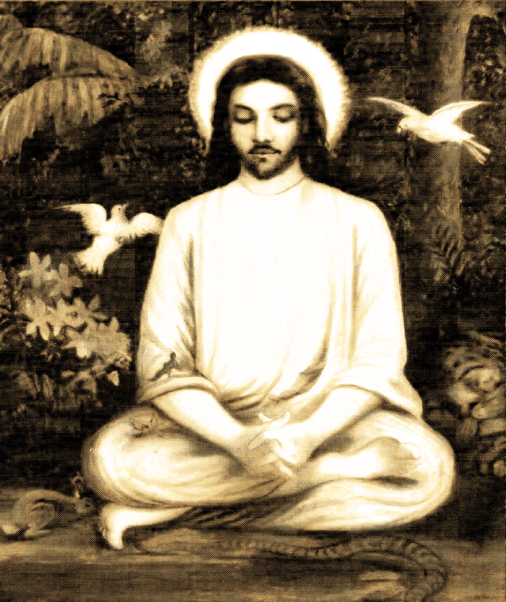

The Tibetan word for meditation "Gom" means "to become familiar with one's Self" and has the strong implication of training the mind to be familiar with states that are beneficial: concentration, compassion, correct understanding, patience, humility, perseverance, etc.
Apart from its historical usage, the term meditation was introduced as a translation for Eastern spiritual practices, referred to as dhyāna in Buddhism and in Hinduism, which comes from the Sanskrit root dhyai, meaning to contemplate or meditate. The term "meditation" in English may also refer to practices from Islamic Sufism, or other traditions such as Jewish Kabbalah and Christian Hesychasm. An edited book about "meditation" published in 2003, for example, included chapter contributions by authors describing Hindu, Buddhist, Taoist, Jewish, Christian and Islamic traditions. Scholars have noted that "the term 'meditation' as it has entered contemporary usage" is parallel to the term "contemplation" in Christianity, but in many cases, practices similar to modern forms of meditation were simply called 'prayer'. Christian, Judaic and Islamic forms of meditation are typically devotional, scriptural or thematic, while Asian forms of meditation are often more purely technical.
According to Ariel, David S. says that meditation was not something practiced without deliberation and prior commitment to the Jewish faith. from the fraternities of Merkava meditation to the whole Hasidic communities engaging in meditative act, Jews were expected to follow Jewish laws and customs at the very least moreover, as seen in cases of the Prophets and later meditation techniques, a certain level of purification was needed.
The history of meditation is intimately bound up with the religious context within which it was practiced. Even in prehistoric times civilizations used repetitive, rhythmic chants and offerings to appease the gods. Some authors have even suggested the hypothesis that the emergence of the capacity for focused attention, an element of many methods of meditation, may have contributed to the final phases of human biological evolution. Some of the earliest references to meditation are found in the Hindu Vedas.[25] Wilson translates the most famous Vedic mantra 'Gayatri' thus : "We meditate on that desirable light of the divine Savitri, who influences our piuous rites" (Rgveda : Mandala-3, Sukta-62, Rcha-10). Around the 6th to 5th centuries BCE, other forms of meditation developed in Taoist China and Buddhist India.
In the west, by 20 BCE Philo of Alexandria had written on some form of "spiritual exercises" involving attention (prosoche) and concentration and by the 3rd century Plotinus had developed meditative techniques.
The Pāli Canon, which dates to 1st century BCE considers Indian Buddhist meditation as a step towards salvation. By the time Buddhism was spreading in China, the Vimalakirti Sutra which dates to 100 CE included a number of passages on meditation, clearly pointing to Zen. The Silk Road transmission of Buddhism introduced meditation to other Asian countries, and in 653 the first meditation hall was opened in Singapore. Returning from China around 1227, Dōgen wrote the instructions for Zazen.
The Islamic practice of Dhikr had involved the repetition of the 99 Names of God since the 8th or 9th century. By the 12th century, the practice of Sufism included specific meditative techniques, and its followers practiced breathing controls and the repetition of holy words. Interactions with Indians or the Sufis may have influenced the Eastern Christian meditation approach to hesychasm, but this can not be proved. Between the 10th and 14th centuries, hesychasm was developed, particularly on Mount Athos in Greece, and involves the repetition of the Jesus prayer.
